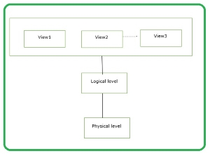

Schema is the overall description of the database. The basic structure of how the data will be stored in the database is called schema.
The different types of schemas are as follows −
Physical schema − It is a database design at the physical level.It is hidden below the logical schema and can be changed easily without affecting the application programs.
Logical schema − It is a database design at the logical level. Programmers construct applications using logical schema.
External − It is schema at view level. It is the highest level of a schema which defines the views for end users.
Generally the Database Management System (DBMS) assists one physical schema, one logical schema and several sub or external schemas.
Database schema refers to the format and layout of the database in which the data will be stored. It is the one thing that remains the same throughout unless otherwise modified. It defines the structure of what type of data and how it will be stored.
A database schema for a person will have fields for name, email, phone and address as shown below −
| Name | Phone no |
These refer to a collection of all the information and data stored at any given moment. One can easily change these instances using certain CRUD operations, such as deletion and addition of data and information.
You must note that no search queries make any changes in any instances.